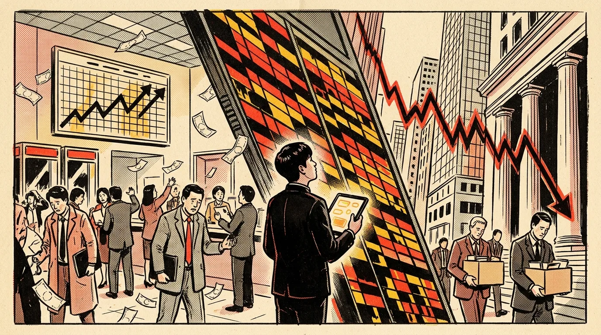
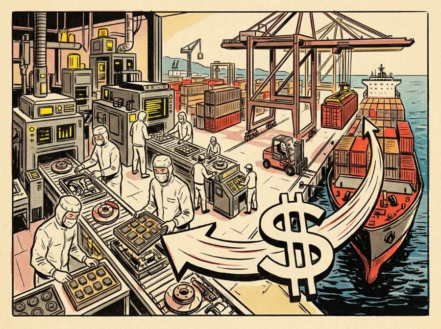
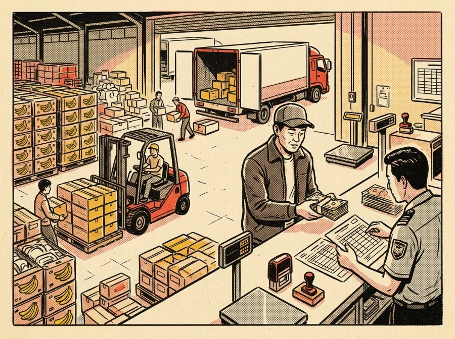
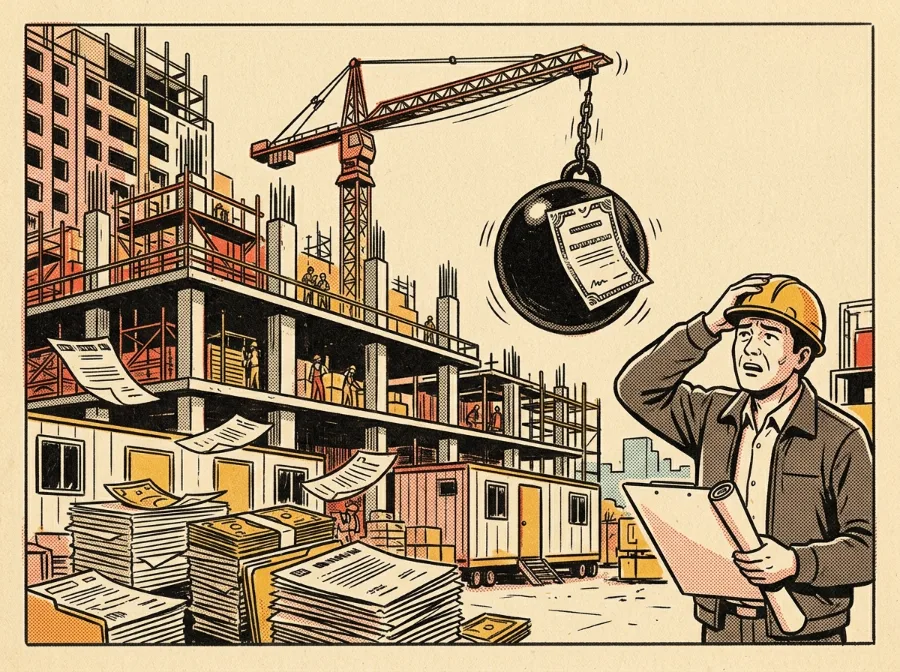
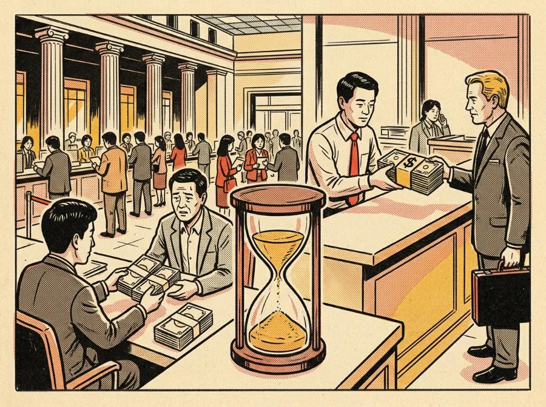
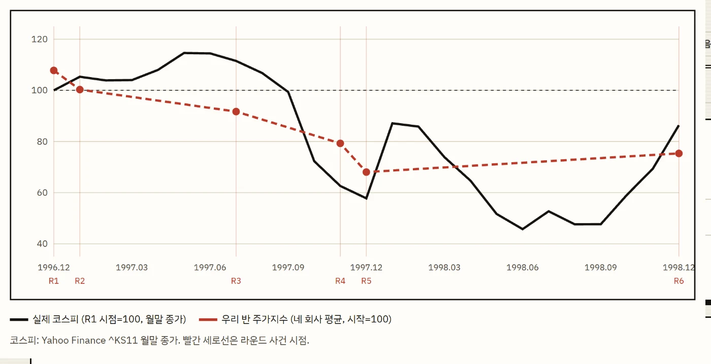

EXTRA · 호외
두 번의 위기,
내 통계로
투자하기
1997 외환위기와 2008 세계 금융위기를
1억 원으로 통과한다
오늘은 이미 배운 것을 써먹는 날
바나나 협상
같은 거래에서도 역할마다 이익과 부담이 다르다
ODA 제안
한 정책에는 경제·외교·인도적 효과가 함께 있다
ECOS 통계
위기 때 환율·외채·금리는 이렇게 움직였다
투자 판단
내 통계를 근거로 결정하고, 결과를 보고 고친다
규칙은 다섯 개
- 판단은 혼자, 시장은 함께.개인 평가이지만 반 전체가 같은 시장에서 투자합니다. 친구들의 매수·매도도 주가를 움직입니다.
- 1억 원으로 시작합니다.2008년 게임에서는 다시 1억 원. 빚·공매도 없음, 현금 보유 가능.
- 근거를 적어야 주문이 됩니다.근거 지표 · 새 정보 · 기업 영향 · 선택 이유
- 마감되면 끝입니다.주문은 마감 전까지 고칠 수 있고, 내지 않으면 보유를 그대로 유지합니다.
- 수익률은 점수가 아닙니다.판단의 근거와, 결과를 보고 고친 과정이 점수입니다.
화면은 둘, 왼쪽은 Zoom · 오른쪽은 게임
- Zoom 채팅의 링크로 게임을 연다created412.github.io/two-crises · 방 코드 4자리
- 창을 반으로 나눈다왼쪽 Zoom(선생님 공유 화면), 오른쪽 게임
- 마이크는 끄고 질문은 채팅으로타이머가 끝나기 전에 주문 제출
- 보고서는 자동 저장, 끝나면 「선생님에게 제출」124분에 선생님이 제출을 마감합니다
공유 화면
내 보고서
구술 때는 선생님이 이름을 부르면 마이크와 카메라를 켭니다.
두 번의 위기를 라운드로 겪는다
네 회사는 달러·금리에 반응이 다르다

한빛수출
반도체·부품 수출. 매출은 달러로 받음. 원료 일부 수입.

바다유통
바나나·생활용품 수입. 물건값을 달러로 지불.

튼튼건설
아파트·공장 건설. 대출과 단기 외화 차입이 많음.

믿음은행
해외에서 단기로 달러를 빌려 국내 기업에 대출.
시작가는 모두 1주 100만원 · 가상 회사·가상 주가 · 위기 상황과 통계는 실제 자료
STEP 1내 발표 슬라이드를 직접 고친다
- 게임에서 내 ECOS 주제를 고른다내 발표 슬라이드가 화면 안에 열린다
- 다음 장 피드백대로 슬라이드를 직접 고친다친구 슬라이드·선생님 피드백 장은 손대지 않기
- 내 통계가 말하는 위기 신호를 한 문장으로이 문장이 투자 전략의 출발점
고친 것: 단기외채 선을 표시하고 1994년 4분기와 1997년 2분기 값을 비교.
위기 신호: 1년 안에 갚을 달러 빚이 2배 넘게 늘었다.
자료가 없으면 주제 하나를 골라 오늘 공통 지표로 시작합니다.
지난번 피드백, 대부분 이 네 가지였다
| 자주 받은 피드백 | 이렇게 고친다 | 해당 주제 예 |
|---|---|---|
| 시점을 특정하라 | "위기 때 빠져나갔다" → "1997년 ○월, 1998년 ○월에 음수" | 증권투자, 직접투자 |
| 기간을 맞춰라 | 1971–2026 전체 대신 위기 앞뒤 5년만 잘라 비교 | 외환보유액, 준비자산, 환율 |
| 범례·단위를 달아라 | 여러 선이 각각 무엇인지, 단위가 무엇인지 글로 설명 | 단기외채, 원/엔 환율 |
| 방향과 비교 기준 | 올랐나 내렸나, 무엇과 비교해 "빠르다·크다"인가 | 경상수지, GDP, 물가 |
STEP 2주문 = 숫자 + 근거 세 가지
무엇을 근거로
내 ECOS 주제 또는 공통지표 ①②③, 오늘 사건 뉴스
새 정보·숫자
뉴스·시세·표에서 새로 본 것
어느 회사에 어떻게
그래서 무엇을 사고·팔고·유지하나
STEP 2주가는 사건과 우리 반이 함께 정한다
1996년 말 · 시작가 각 100만원
1997
다음에 무슨 일이 생길지 모르는 상태에서 첫 전략을 세우고, 라운드마다 새 사건에 맞서 판단을 고치세요.
2007년 · 다시 1억 원
2008
1997년과 무엇이 같고 무엇이 다른가? 지난 게임의 판단을 이번엔 어떻게 바꿀까?
게임 속 뉴스, 실제 방송으로 다시 본다
 ▶
▶ ▶
▶실제 코스피와 우리 반 주가, 무엇이 달랐나

- 수정 전게임 중 내 판단과 근거
- 실제와 비교어디가 같고 다른가, 왜?
- 수정 후근거를 다시 읽고 바꾼 해석
- 추적 로그 2회차두 게임을 거친 뒤 내 쟁점에 대한 생각
STEP 3세 지표로 두 위기를 비교한다
- 공통지표 ①②③ 모두 사용환율 · 대출금리 · 실질 GDP 성장률
- 1997 vs 2008 정부 대응 비교IMF 고금리 vs 금리 인하·통화스와프
- 한국 vs 태국 비교같은 점, 다른 점
- 어디서 읽었는지 적기지표 번호 · 연도 · 국가 · 값
대출금리는 은행 대출금리입니다. 한국은행 기준금리와 다릅니다.
STEP 4바나나 협상처럼, 누가 이익이고 누가 부담인가
- 내 추적 쟁점을 이어 쓴다
- 원인을 무역·금융 구조로수출 의존, 단기외채, 자본 이동 …
- 대안 두 개를 정한다
- 득실표로 저울질하고 하나를 고른다그리고 추적 로그 2회차
| 이해관계자 | 대안 A: 금리 인상 | 대안 B: 금리 인하 |
|---|---|---|
| 수출기업 | ? | ? |
| 빚 많은 기업·노동자 | 부담: 이자 급증 | ? |
| 은행 | ? | ? |
| 정부 | ? | ? |
| 외국인 투자자 | ? | ? |
STEP 5AI가 한 말, 그대로 믿지 않는다
써도 되는 것
자료 검색 · 어려운 용어 · 통계 표 정리
쓰면 부정행위
지표 해석 · 득실 분석 작성
개인정보(학번·이름·학교) 입력
- AI 문장 5개 중 2개 이상 틀린 곳맞는 문장과 틀린 문장이 섞여 있음
- 원자료로 교정한다어느 표 몇 년 값인지
- 내 AI 대화 공유 링크 제출무엇을 물고, 무엇을 의심하고, 무엇으로 확인했나
- 구술 때 내 말로 설명한다
STEP 7124분, 모두 제출한다
- 선생님에게 제출 버튼PDF로도 저장 가능
- 124분 이후 수정 금지구술 순서가 늦어도 똑같이
- 이름이 불리면 마이크·카메라를 켜고 2분 구술질문 2개, Zoom에서 진행
· 1997과 2008 대응은 무엇이 달랐나?
· 네 대안으로 부담을 지는 사람은?
· AI 문장의 어디가 왜 틀렸나?
설명하지 못한 내용은 채점에서 빠질 수 있습니다.
점수는 판단의 근거에서 나온다
지표 비교
두 위기 + 타국 비교 + 근거 위치
구조·득실
무역·금융 구조 원인 + 이해관계자별 득실표
비교·수정
실제 코스피와 비교해 실제로 고친 해석 + 추적 로그 2회차
AI 검증
오류 2건 이상 교정 + AI 대화 기록 링크 + 구술